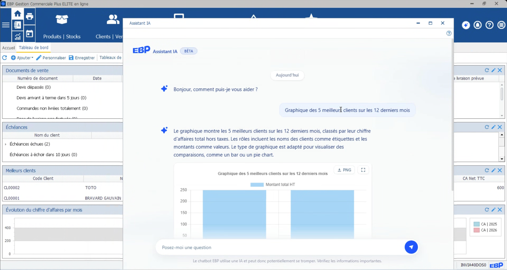
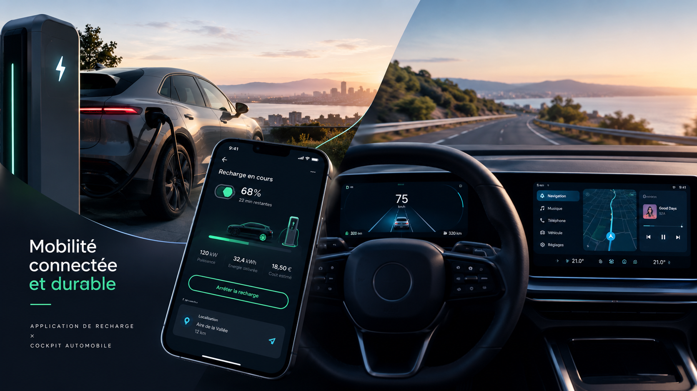

IA · Design Leadership
Agent conversationnel IA — EBP Open Line
Recherche utilisateurs et pilotage produit pour l'intégration d'un assistant IA dans la suite EBP Open Line.
6 ans d'expérience à piloter des produits SaaS de bout en bout — de la discovery au lancement — pour des équipes produit françaises et internationales, du SaaS de facturation à l'intégration d'agents IA.

Product Designer orienté product management, j'interviens sur tout le cycle de vie produit : compréhension du problème en discovery, conception, jusqu'à l'amélioration continue post-lancement. J'ai eu la chance de collaborer avec des équipes pluridisciplinaires françaises et internationales, et de piloter des projets IA — intégration d'un agent conversationnel, refonte des process design.
Mon leitmotiv : identifier le bon problème, apporter la bonne solution, l'évaluer et l'optimiser.



Product Designer orienté product management avec 6 ans d'expérience sur l'ensemble du cycle de vie produit — discovery, conception, amélioration continue — au service de la roadmap produit et des objectifs business.
Études de cas produit, du SaaS de facturation à l'intégration d'agents IA, ainsi que quelques projets freelance et explorations personnelles.
Intégration d'un agent conversationnel dans la suite EBP Open Line (Comptabilité, Bâtiment, Gestion commerciale), en binôme avec une autre Product Designer et l'équipe IA (Product Owner, développeurs).
En amont, j'ai intégré un groupe de travail Cegid dédié à l'IA : observation et collecte des besoins utilisateurs sur les logiciels du groupe, analyse des bonnes pratiques IA, formalisées dans un article partagé à l'ensemble du groupe Cegid. Cette étape m'a permis d'appréhender les usages de l'IA à travers différents logiciels avant de cadrer le projet Open Line.
Missionnée sur les produits Open Line, j'ai coordonné PM, marketing, commerce et pôle data pour identifier les besoins et définir l'offre. J'ai conçu la grille d'interview, mené les entretiens clients en binôme et présenté la restitution aux parties prenantes.
37 clients EBP interrogés sur leur rapport à l'IA via une enquête quantitative menée avec le pôle data (janvier 2026). 14 entreprises clientes EBP (TPE/PME, de 1 à plus de 50 salariés) interviewées entre le 10 et le 31 mars 2026, sur les produits Comptabilité, Gestion commerciale, Méca et Bâtiment.
Depuis la mise en production, aucune remontée liée à l'agent conversationnel auprès de l'assistance technique ; les utilisateurs se disent satisfaits de l'outil. J'ai piloté la mise en place d'un tableau de bord interne d'observabilité pour affiner l'usage de l'assistant, mesurer l'adoption en continu et confirmer ou infirmer les hypothèses issues de la recherche.
Créer un logiciel de facturation adapté au secteur du bâtiment (PME, artisans). Les outils existants étaient trop complexes, manquaient d'ergonomie et faisaient perdre du temps sur les tâches administratives.
UX/UI Designer sur 100% du cycle produit : 10 interviews utilisateurs, benchmark SaaS, wireframes et parcours, 5 tests utilisateurs, programme early adopters, UX Analytics (Microsoft Clarity, Heap), méthodologie agile avec PO/PM/devs/marketing.
Dashboard clair et hiérarchisé, navigation par parcours (devis → validation → facturation), UI sobre et professionnelle, contribution au design system (boutons, formulaires, alertes).
Intégrer des services bancaires embarqués accessibles sans quitter l'application, pour permettre aux artisans et commerçants de connecter leur logiciel de facturation à un compte pro.
Prototypage du parcours d'activation de compte pro, de son alimentation, et du parcours de règlement des factures. Co-conception de l'interface du chatbot IA avec le Product Manager et les développeurs.
Participation au groupe de travail sur l'adoption des assistants et agents IA par les clients dans des logiciels professionnels.

5 groupes de designers ont proposé un prototype incarnant la nouvelle marque Cegid. Après veille et conception, les 5 prototypes finaux ont été testés auprès de 100 testeurs avec l'aide d'un paneliste.
Comparaison des projets selon des critères établis (couleur, ergonomie...) pour identifier points de friction et éléments attractifs, et orienter les décisions de design à l'échelle du groupe.
Prototype d'application de mobilité intégrée : transition écologique, multimodalité et accessibilité territoriale, combinant transports publics, covoiturage et voiture partagée.
Réflexions sur la décarbonation, la sobriété énergétique et la fluidité des parcours. Volet accessibilité dédié : repenser l'expérience de mobilité pour les personnes en situation de handicap.
Product Designer spécialisée en UX/UI, j'ai travaillé sur des produits digitaux variés et je concentre aujourd'hui mon attention sur les expériences automobiles — services connectés, interfaces embarquées et produits de mobilité. Ma démarche : comprendre comment les entreprises abordent l'UX à l'ère du véhicule software-defined, et échanger avec les équipes qui relèvent ces défis.
Prototype animé d'interface HMI pour véhicule électrique : cluster conducteur et écran central conçus comme deux plans d'information distincts, avec modes de conduite Éco / Confort / Sport, navigation, gestion de l'énergie et de la recharge, climatisation et média.
Le cluster ne porte que la conduite : vitesse, voie, énergie. Tout le reste vit sur l'écran central. Les 2px de règle séparent les plans sans ajouter d'ornement.
L'accent (vert Clean-Tech, cohérent avec le réseau Eleckar d'E-Orizon) est réservé au mode actif, à l'itinéraire et aux alertes. Les modes se distinguent par la typographie et la densité, pas par un habillage coloré.
La personnalisation se fait dans une grille 3×2 fermée : l'utilisateur choisit le contenu, le système garde le rythme et les cibles tactiles.
L'autonomie est exprimée en kilomètres et en état de charge à l'arrivée. La consommation instantanée reste secondaire, en histogramme.
Prototype mobile d'application de mobilité électrique : de la préparation d'un trajet longue distance jusqu'à l'arrivée, en tenant compte de la batterie, du réseau d'abonnement, des bornes disponibles sur l'itinéraire et du budget de recharge — 7 écrans, d'un aller simple Paris → Arcachon.
Le réseau d'abonnement (Eleckar) est mis en avant sur le trajet et sur la carte, avec le tarif abonné distingué du tarif public — l'utilisateur voit immédiatement où il paie moins.
Un montant estimé au départ, mis à jour en temps réel pendant la conduite, confronté au coût réel à l'arrivée — jamais une surprise.
Consommation réelle, vent, température et disponibilité des bornes recalculent l'itinéraire en continu ; un retard de plus de 20 minutes reporte automatiquement la réservation de borne.
Avant chaque arrêt, les fournisseurs alternatifs sont comparés au coût total du détour, pas seulement au prix au kWh.

Refonte complète d'un site trop dense et daté. Maquettes Figma, interviews auprès de jeunes utilisateurs, développement WordPress. Prise en charge de la communication print et digitale (bannières, flyers, réseaux sociaux).
Conception d'un site responsive et accessible pour 3 publics (salariés, employeurs, représentants du personnel), identité de marque et plaquettes institutionnelles.
Amélioration du parcours de prise de rendez-vous et refonte de la carte interactive des centres d'accueil, avec optimisation du contenu pour le référencement.

Exploration de l'univers digital d'Hermès et Versace pour comprendre les codes visuels et l'expérience utilisateur du secteur du luxe et de la mode — comment le design sublime l'image de marque tout en optimisant les parcours clients.